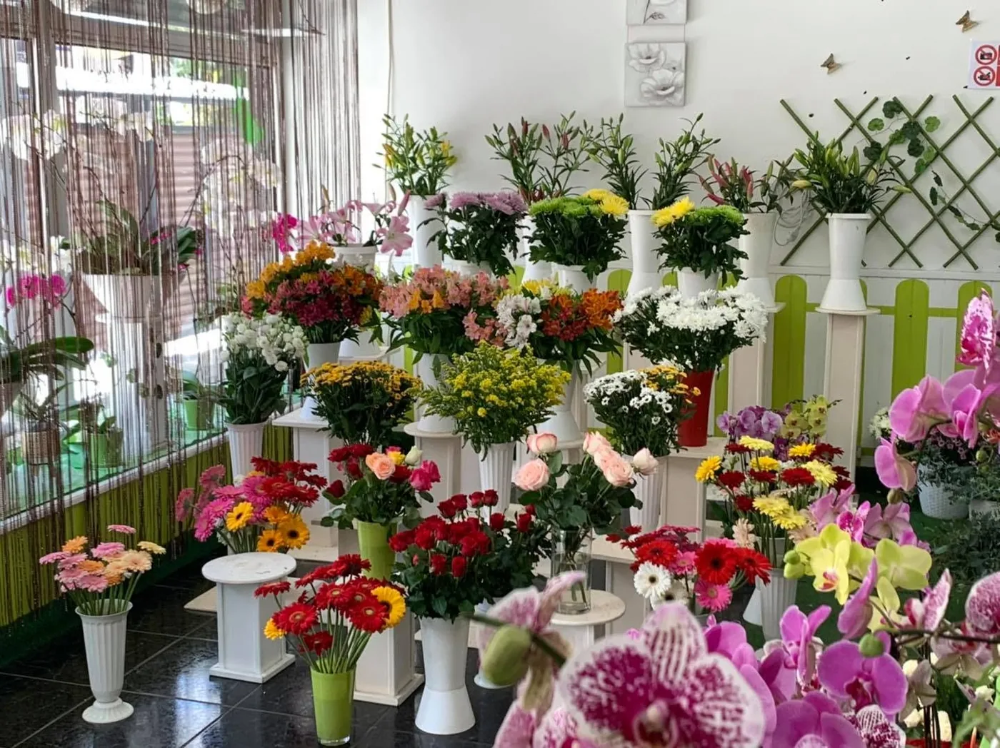
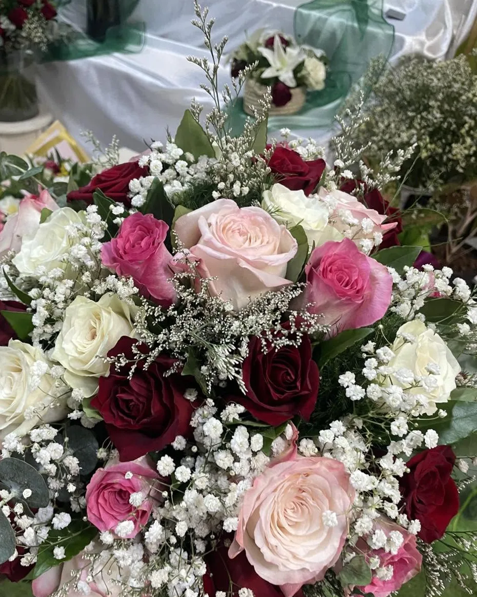
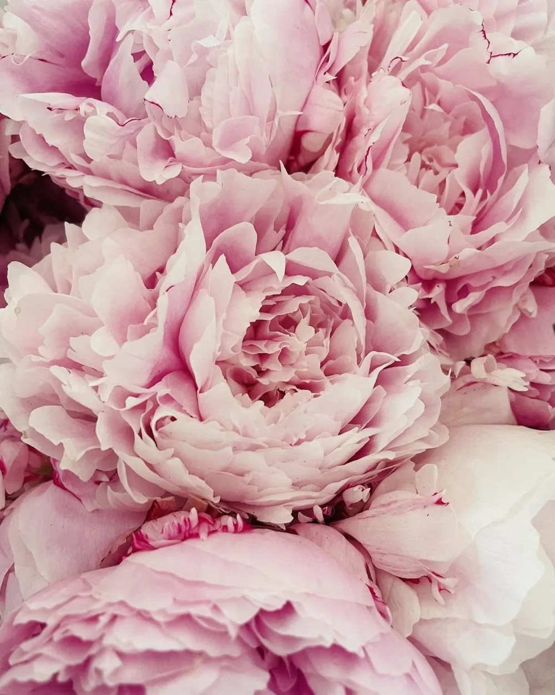
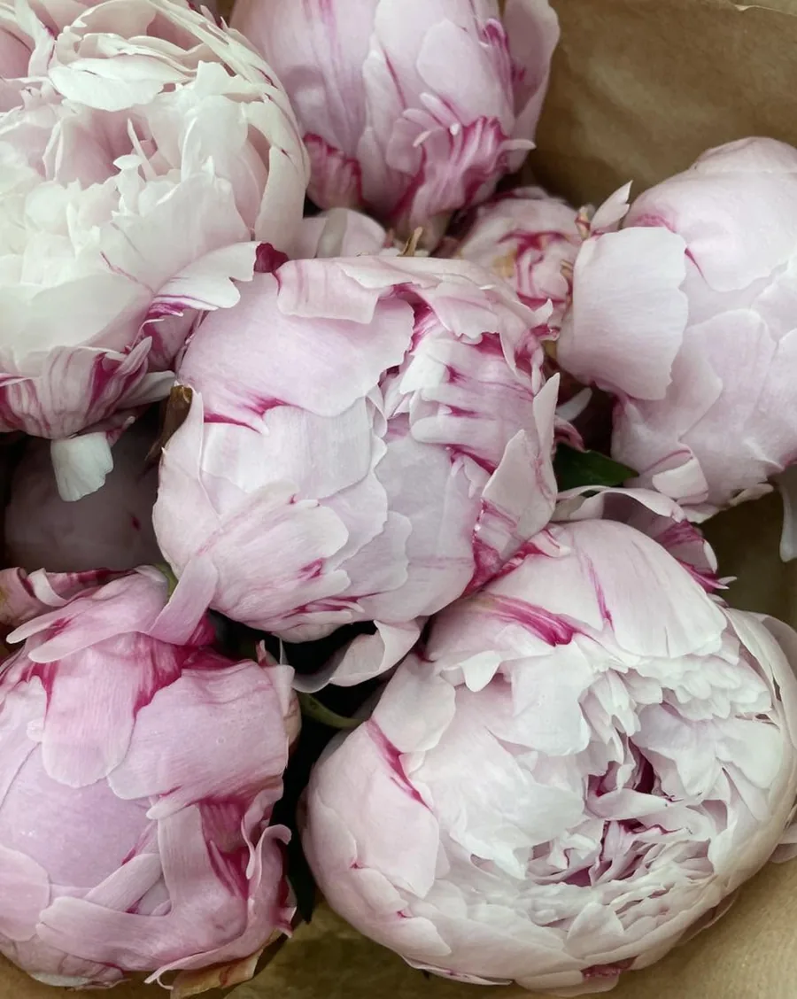
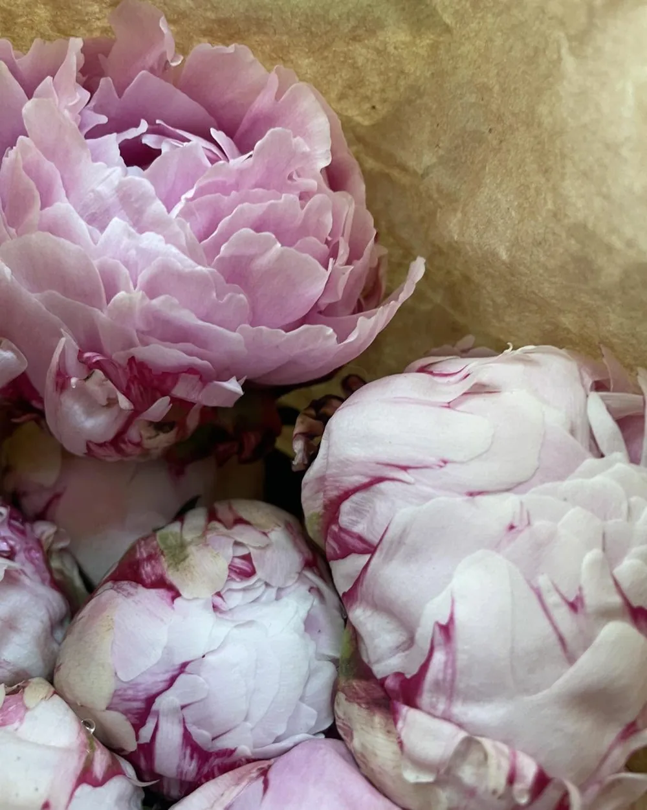
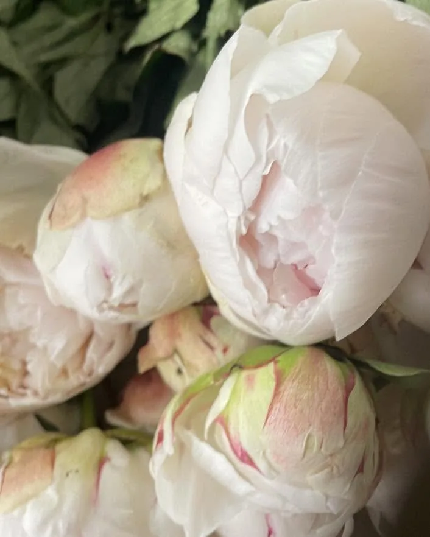
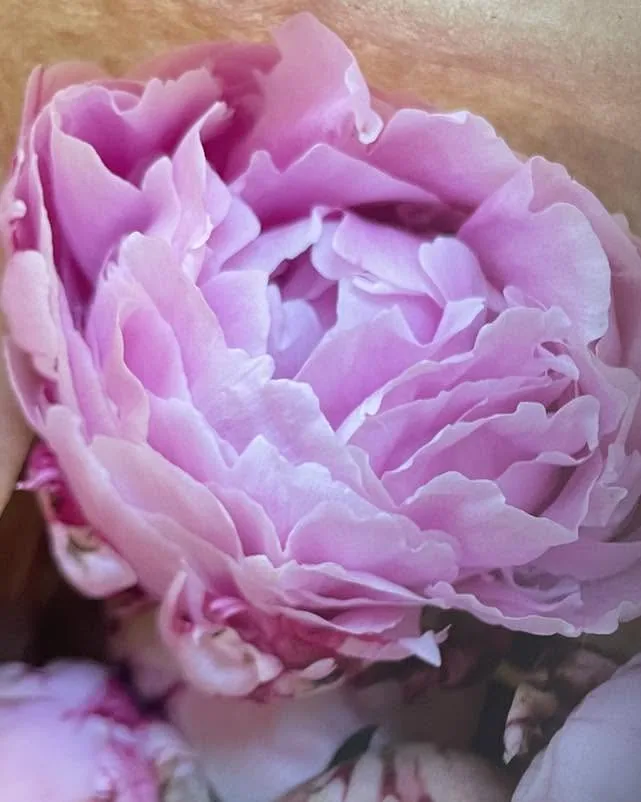

Fleuriste · Saint-André · La Réunion
La Féérie
des Fleursavec toute sa magie bienveillante
« Un large choix parmi tous types de fleurs » : bouquets, compositions et créations personnalisées, préparés avec tendresse dans la boutique du 66 rue Maingard.
66 rue Maingard · Immeuble Salangane · 97440 Saint-André
La boutique
Bienvenue chez Chantale
Au cœur de Saint-André, La Féérie des Fleurs réunit fleurs coupées, plantes, bouquets et compositions : de quoi composer un geste tendre pour chaque occasion, du bouquet du jour « festif et coloré » à la création sur-mesure.
« La Féérie des Fleurs continue de vous accueillir avec toute sa magie bienveillante à Saint-André ! »
Toute l'équipe vous attend avec le sourire, et la boutique du 66 rue Maingard est toujours ravie de vous accueillir.

La saison des pivoines
Des fleurs qui font plaisir
« Composez un bouquet tendre et lumineux avec nos pivoines généreuses, nos tulipes pleines de fraîcheur et nos lys élégants et parfumés. »





Faites glisser pour voir toutes les fleurs →
Fleurs & plantes
Un large choix parmi tous types de fleurs : fleurs coupées, plantes et orchidées, à choisir directement en boutique.
Bouquets & compositions
Bouquets, compositions et créations personnalisées, à réserver au 0692 87 25 17.
Livraison à domicile
Vos fleurs livrées à Saint-André et dans les communes voisines, pour faire plaisir à distance.
Un jardin en ville
Entrez dans la féérie
Gerberas éclatants, roses pêche, lys, alstroemerias, chrysanthèmes et orchidées : la boutique est un petit jardin coloré où chaque vase donne une idée de bouquet.
- Fleurs coupées et plantes
- Orchidées
- Compositions florales
- Fleurs pour vos événements
Mariage fleuri
Un fleurissement sur-mesure
« Pour que votre événement vous ressemble, la Féérie des Fleurs vous propose un fleurissement sur-mesure afin de contribuer à rendre la magie du moment mémorable. »
Livraison à domicile
Vos fleurs voyagent dans l'Est et le Nord
Commandez vos fleurs et faites-les livrer à la personne qui compte : La Féérie des Fleurs dessert ces communes.
Idée cadeau
Offrir des fleurs pour Noël
Un bouquet, une composition ou une orchidée : le cadeau qui fait briller les yeux, préparé à Saint-André, à retirer en boutique ou à faire livrer.
Une création florale à offrir
Dites-nous pour qui, vos couleurs préférées et la date souhaitée : l'équipe prépare une création personnalisée, à retirer en boutique ou à faire livrer.
Commandes et réservations sur WhatsApp ou par téléphone.
Nous trouver
À très vite à Saint-André !
La Féérie des Fleurs
66 rue Maingard, Immeuble Salangane
97440 Saint-André, La Réunion
Mobile & WhatsApp : 0692 87 25 17
Boutique : 0262 40 21 38
E-mail : chantale.patma@gmail.com